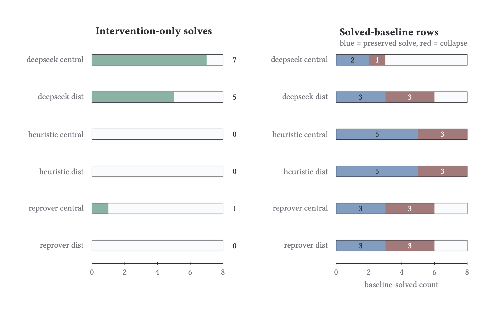
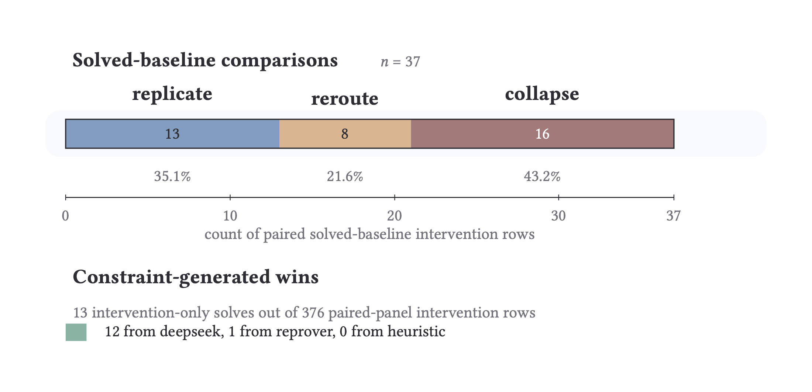
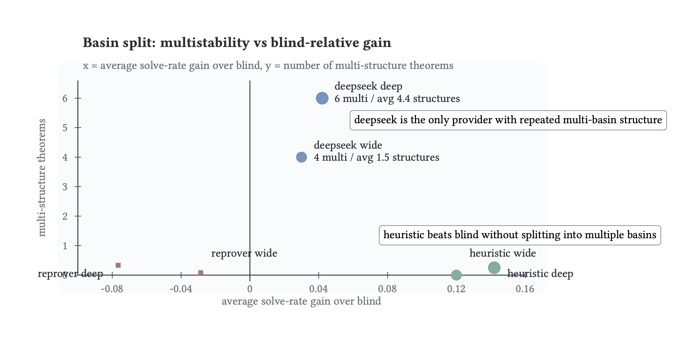
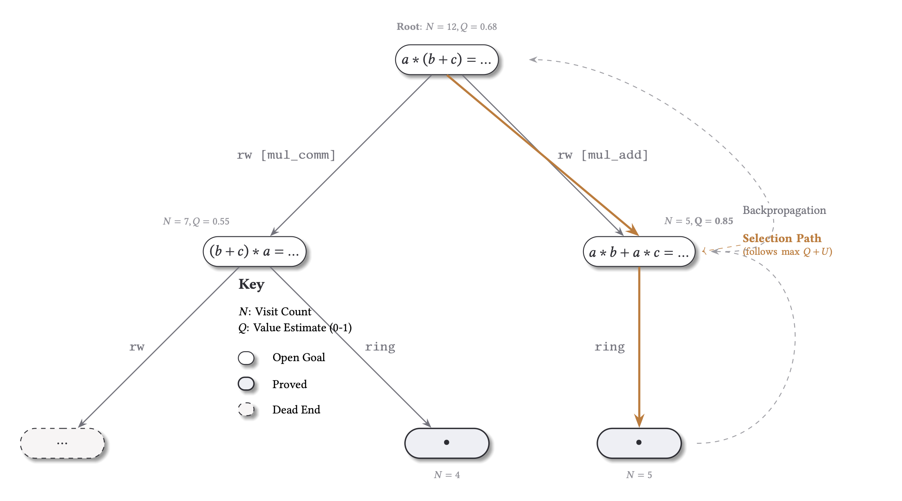

The blocked edge was off the path the prover used, so the search graph is unchanged. not_or_and under block_exact closes both runs.
Wonton Soup
MCTS search over Lean tactic proofs: an intervention framework for proof structure and basins, and a study of distributed MCTS as a search algorithm.
Solve a theorem with distributed MCTS. Block a tactic family and rerun under matched seed and budget. The proof comes back the same, comes back different, fails, or closes faster. The lake holds 25,798 reruns across 340 runs and three providers.
Four outcomes of a matched-budget tactic block
The block cuts the wild path. The prover closes through a different branch. AEMeasurable.sum_measure under block_exact closes via a different family.
The blocked tactic held the only closing edge. The tree stops before the goal. hf_..._11756 under block_linarith: 16/16 solves to 0/16.
The blocked tactic was a habit that wasted budget. Without it the search closes far sooner. hf_..._19703 under block_obtain drops 204 iterations.
We damage a working proof search and watch how it recovers. When a theorem still reaches its goal by a different route, that is one goal pursued by variable means, the James test for goal-directed behavior. We measure it across 25,798 comparisons and 340 runs.
Reroutes are real and cheap. Tactics range from redundant scaffolding to irreplaceable chokepoints. Wider basins recover from lesions less, not more (r = −0.18).
Under damage, some proofs reroute through a different family and still reach the goal. Others depend on one tactic, and removing it cuts the goal off entirely.
Lesion rows
5,161
across 340 distributed MCTS runs and three tactic providers.
Reroute survival
34.0%
1,754 of 5,161 lesioned rows preserve goal reachability through a different proof family.
Structural drift
58%
of solved-strict rows show non-zero search-graph edit distance.
Naive basin hypothesis
r = −0.18
unique-structure count vs lesion recovery. Wider basins recover from lesions less often.
Recovery rate by tactic, redundant to load-bearing
A continuous gradient. The same lesion protocol that fully recovers when
block_push_neg is removed almost never recovers when block_dsimp is removed.
A single irreplaceable tactic erases every solve
One ReProver theorem under matched budget. Blocking
linarith turns every wild-type seed from a solve into a failure.
Some lesions speed search up, not down
~3% of lesions accelerate search (785 of 25,798 rows). Blocking a tactic that anchors a habitual commitment frees the prover's budget for the goal.
Preprint figures
Three figures from the preprint: outcome counts by provider, the edit-distance distribution, and basin width against recovery.
Fig 17 · Provider splitsLesion outcomes · 340 runs

Right: the strict denominator, where the baseline solved and the matched control_null rerun also solves. Left: the excluded rows, split into rescues and null-unstable spillover. All three providers agree. DeepSeek is the noisy one: 72.0% null-solve against 99.9% and 100%.
Fig 16 · GED bimodality1,250 solved strict rows

Search-graph edit distance across 1,250 solved strict rows. 602 (48%) are reroutes by hash mismatch; 730 (58%) show structural drift. Mean 0.405.
Fig 18 · Basin width vs recoverynegative result

Wider basins recover less often. r = −0.18. The widest quartile recovers at 25.8%, below Q1 37.5%, Q2 36.5%, and Q3 47.2%.
Search structure · MCTS treeFrom the companion blog

Centralized MCTS over Lean goals: each node is an obligation, OR-branches are tactic choices, AND-sets are required subgoals. Distributed MCTS shares this frontier across controllers and adds scheduler lesions on top.
Per-tactic recovery rate
Block one tactic family. Measure how often the theorem still solves under matched budget. The percentage uses the strict denominator; the tag shows the lake-wide rate.
Trajectory divergence under lesion · solved vs failed
n = 25,798 · lake
Cut sensitivity for a single tactic
For hf_deepseek_prover_v1_train_11756, blocking
linarith doesn't slow the prover. It cuts the basin off
entirely. The proof-term DAG records 128 linarith facts,
96 preprocessed, and 32 certificates.
Wild type · ReProver
16 / 16
Every seed solves. linarith closes the arithmetic step; the other tactics carry the structure.
block linarith →
Lesion · ReProver
0 / 16
Total collapse. DeepSeek matches it, 6/7 → 0/7. The chokepoint is not provider-specific.
Some chokepoints are provider-relative. For
list_append_nil, blocking cases collapses ReProver, but
the heuristic provider routes around it. The chokepoint lives in the policy, not the theorem.
ReProver / block cases
0 / 16
Down from 16/16 wild type. ReProver leans on the case split; no alternative fires.
vs
Heuristic / block cases
16 / 16
Heuristic routes through induction. Same goal, substitutable. The chokepoint is in the policy, not the math.
Basin width does not predict resilience
Rerun a theorem 64 times with reshuffled seeds. coq_pair_andb_prop spreads across seven structural buckets, one dominant. Across the corpus, wider basins recover from lesions less often.
coq_pair_andb_prop · 64 seeds
7 buckets
01
02
03
04
05
06
07
08
09
10
11
12
13
14
15
16
17
18
19
20
21
22
23
24
25
26
27
28
29
30
31
32
33
34
35
36
37
38
39
40
41
42
43
44
45
46
47
48
49
50
51
52
53
54
55
56
57
58
59
60
61
62
63
64
Basin width vs lesion recovery
r = −0.18
Wider basins recover from lesions less often
The widest-basin theorems (21 to 28 structures) recover least. A better predictor might be variants that cross independent resource channels, not ones that reuse the same infrastructure.
Within-tree convergence is rare
Across 4,640 search graphs, only 1% (68) converge within the tree. The variation shows up across reshuffled seeds, not inside one rollout.
Rescue cases
4,508 lesioned rows solve under matched budget. The biggest, hf_deepseek_prover_v1_train_19703 under block_obtain, closes 204 iterations sooner. Blocking a habitual tactic frees budget for the goal.
Paired trace · hf_deepseek_prover_v1_train_19703 · wild-type vs block_obtain
GED 1.00 · iter diff −204
Rescue inventory · lake aggregate
4,508 solved-strict reruns · top sources
Two patterns here. Dense rescues like block_norm_num1 (49%) mean the provider over-uses a tactic that was rarely the cleanest closer. High-volume rescues like block_intros (546) are the population effect: a tactic used everywhere becomes a habit everywhere, and habits cost budget.
Distributed MCTS and scheduler lesions
Shared-frontier topology · controllers, AND/OR tree, scheduler-lesion injection points
orchestrator/lean.py
Scheduler lesions act above the tree. Block fraction f is the share of dispatch decisions the scheduler must reject, forcing the controller to claim another goal. Recovery falls only slightly with f: the centralized AND/OR search carries most of the load. The provider split agrees: a noisier policy like DeepSeek rescues more because it has more removable habits.
Collapse is runaway expansion
Collapsed runs average 6.7 iterations, 1.7 backtracks, and 2.9 unique goals, against 3.0, 0.1, and 2.1 for solved runs. They expand blindly rather than exhaust the search.
K is net-negative
Across 1,905 K-scored rows, mean log10(τ_blind / τ_agent) is −0.04 (sd 0.20). The prover does not beat blind on average; the signal is in the spread, not the mean.
Where K is positive
add_add_neg_cancel'_right and add_sub_sub_cancel sit at K = +0.41 and +0.39 respectively: 2 prover iterations against ~5 blind.
Proof-term monodromy
Each solve produces a proof term that type-checks against the theorem. We hash that term on every wild-type solve and count how many distinct terms a theorem lands on. Hold everything fixed but the seed, and one theorem in six still closes on a different term. The proof is not canonical even when nothing else changed. Across two providers the fraction rises to 72%, across three or more to 95%, but those are smaller, harder subsets (452 and 43 theorems against 975). A second provider is a second model with its own habits, so those numbers bound how wide the fiber can open, not the diversity itself.
Proof-term fiber width per theorem · wild-type solves, Lean backend
fraction with 2+ distinct closing terms
Whole-proof hashes, not per-goal yet
These use theorem_wild.proof_term_hash, the whole-proof hash per wild-type solve, 88% populated across 7,068 Lean solves. The missing piece is per-goal monodromy: completed_proof_term_hash, the hash of the subterm that closes each goal. The hook at prover/assembly.py is wired but still passes None on most goal records.
What the data shows
Same goal, variable means
Among solved-strict rows, 48% are reroutes by hash, 58% show structural drift, mean GED 0.405. The theorem is fixed and the proof family varies, at no visible cost in the trajectory.
The block is syntactic, the response is structural
The prover is never told it was perturbed. block_dsimp drops recovery to 2%; block_push_neg leaves it at 100%. The same kind of edit produces very different structure underneath.
Partition basins by resource channel
Wider basins do not survive lesions better: r = −0.18. The next test is whether basin variants cross independent resource channels, partitioned by axiom and lemma usage.
What would change the reading
- Reroutes collapse to noise around a single trajectory under tighter controls.
- Scheduler lesions produce no theorem-level effects at any block fraction.
- Cut sensitivities vanish when budgets absorb them.
- A basin partition by independent channels does no better than raw width.
Dashboard
The dashboard ships the lake as parquet and runs queries in the browser. Scrub wild-type and intervention runs side by side. Four views, each tied to a paper claim.
Open the dashboard
Launch dashboard →
Hero / paired player
Wild vs intervention MCTS tree, side by side, with a scrubber and goal panels.
Explorer
Run, theorem, and intervention drilldown with arbitrary filters.
Proof graph
Proof graph (Coq) or trace graph (ATP) for any solved row.
Rescue matrix
Rescued / collapsed / unchanged heatmap. The 256 block_intros rescues are the row to look at.
Reproducing locally
Every figure and number rebuilds from the lake. The commands are in the repository README.
Sources
- Preprint PDF. "Proto-Cognitive Signatures in Distributed MCTS Theorem Proving", Ludwig P., April 2026.
- Live dashboard. Verify any claim on this page against the lake.
- Companion blog post. The longer write-up.
- Follow-up blog. The results that didn't make the main paper.
- Cabinet documentation. Lake schema, contracts, ADRs, runbooks.
- Source repository.